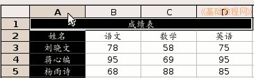
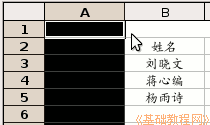
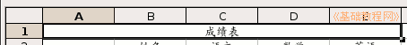
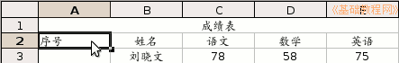
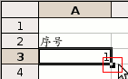
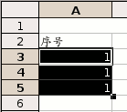
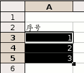
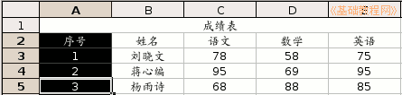

OpenOffice.org 教程之 Calc 电子表格
作者：TeliuTe 来源：基础教程网
三、插入和填充 返回目录 下一课有时候需要改变表格的结构，比如新插入一行或一列，下面我们来看一个练习；
1、启动Calc
1）点击点菜单“应用程序－办公－OpenOffice.org 电子表格”；
2）点菜单“文件－打开”命令，在自己的文件夹中找到上次保存的“成绩表”文件，打开它；
2、插入和填充
1）在第一行上边的标题“A”上点一下，在标题上点击就会选中A这一列；

2）瞄准“A”，点一下鼠标右键，在弹出的菜单中选择“插入列”命令，这样就会自动在左边插入一列空白列，原来的A列变成B列；

3）选中标题的A1到E1单元格，点菜单“格式－合并单元格－合并单元格”命令，
点两次，第一次去掉上次合并的勾，再点一次合并这次的；

4）再点一下A2单元格，选中它，输入“序号”；

5）再在下边的A3单元格中输入数字1，注意单元格的右下角有一个小黑块，这是“填充手柄”，把鼠标移过去瞄准，指针会变成十字形，
瞄准按住左键（指针变成十字形)，同时按住Ctrl键往下拖到第5行，可以发现从A3到A5都填充上了1，对于输入相同的数据很方便；
 
6）按一下Ctrl＋Z组合键，撤销一下，这儿的序号要求是逐渐增大，
重新点选A3单元格，瞄准旁边的填充手柄，然后拖动手柄到A5，这次序号就逐渐增大了；

7）选中新增的A2－A5单元格，瞄准敲右键，选“单元格格式”命令，在对齐中设为居中对齐；

点菜单“文件－保存”命令，保存一下文件，也可以按Ctrl＋S组合键；
本节学习了Calc中插入列和自动填充基本操作，如果你成功地完成了练习，请继续学习下一课内容；
本教程由86团学校TeliuTe制作|著作权所有
基础教程网：http://teliute.org
美丽的校园……
转载和引用本站内容，请保留版权信息和本站链接。